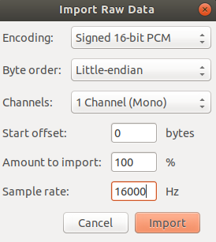
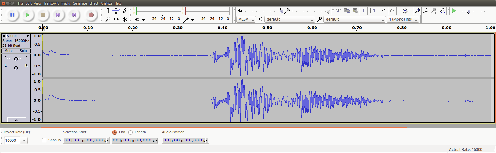

X-NUCLEO-IKS02A1 shield: Acquire MEMS microphones data¶
Overview¶
This sample enables the digital MEMS microphone on X-NUCLEO-IKS02A1 shields
This sample provides an example of how to acquire audio through the digital MEMS microphones on X-NUCLEO-IKS02A1 shield. The microphone generates a PDM stream which is acquired through I2S. The PDM stream is then converted to PCM using the OpenPDM2PCM library available in zephyrproject/modules/hal/st/audio/microphone.
Requirements¶
This sample communicates over I2C with the X-NUCLEO-IKS02A1 shield stacked on a board with an Arduino connector.
Note
Please note that, in order to make the shield working on top of this board, it is needed to have SB24 and SB29 solder bridges properly closed. In this way the PDM microphone clock and data lines get connected to SPI clock and MOSI. Similar consideration may apply to other boards as well.
References¶
X-NUCLEO-IKS02A1: https://www.st.com/en/ecosystems/x-nucleo-iks02a1.html
Building and Running¶
This sample runs with X-NUCLEO-IKS02A1 stacked on any board with a matching Arduino connector. For this example, we use a ST Nucleo F411RE board. To build the sample you can use following command:
west build -b nucleo_f411re samples/shields/x_nucleo_iks02a1/microphone/
Note
In case a different board is used, one of the things that must be verified before building the sample is the I2S output clock frequency configuration. For example, for nucleo_f411re board, we have the following file that configures the I2SPLL and have a dependency on HSE/HSI: boards/shields/x_nucleo_iks02a1/boards/nucleo_f411re.defconfig
The user is invited to to verify which osci is configured on the used host board defconfig file and calculate the final I2SClk frequency, e.g. boards/arm/nucleo_f411re/nucleo_f411re.dts
Sample Output¶
The example acquires one second of audio and prints out the PCM stream on COM port. The acquisition starts immediately after the reset button is pressed.
The characteristics of the PCM audio are hardcoded in the example:
16KHz sample rate
16 bits per sample
1 channel (mono)
One second of acquisition at a 1 channel 16KHz sampling rate yields 16,000 16-bit samples. The microphone PDM requested clock should lead the MP34DT05 driver to select an oversampling/decimation factor to result in approximately a 2MHz bit clock.
See PCM and PDM configuration in file samples/shields/x_nucleo_iks02a1/microphone/src/main.c.
Note
It is possible to change the AUDIO_FREQ to 32000 acquiring only 500 ms.
At the end of the acquisition the PCM data will be printed on the terminal
emulator in either binary or ASCII format. The output is controlled by the
PCM_OUTPUT_IN_ASCII macro, off by default, in
samples/shields/x_nucleo_iks02a1/microphone/src/main.c.
Binary PCM Output¶
The Nucleo F411RE board presents itself to the host
as a USB CDC class, and will use /dev/ttyACM0
device for communication. The /dev/ttyACM0 port
must be configured in raw mode to avoid having
special characters (such as CTRL-Z or CTRL-D)
processed and ‘cooked out’.
stty -F /dev/ttyACM0 115200 raw
cat /dev/ttyACM0 > /tmp/sound.raw
dos2unix -f /tmp/sound.raw
Note
The dos2unix command is used to recover the situation in which the character 0x0a is interpreted as NL and an 0x0d (CR) is added. If you don’t remove it the audio stream would get corrupted.
Warning
The /tmp/sound.raw file final size should result exactly of 32000 byte, but sometimes may
happen that 1 or 2 spurious 0x00 bytes are put at the beginning. In this case the user
may get rid of them using the following linux command (change skip value according
to number of spurious bytes to be removed):
dd if=sound.raw of=sound_clean.raw bs=1 skip=1
ASCII PCM Output¶
It is also possible to recompile and to have PCM output in ASCII, which needs to be converted to binary later on. The output format is the following:
-- start
0xfbe0,
0xfbf0,
0xfc0c,
0xfc24,
0xfc3c,
0xfc4c,
0xfc68,
0xfc48,
[...]
0xfb98,
0xfb98,
0xfbb8,
0xfbac,
0xfbc4,
0xfbe8,
0xfbf4,
-- end
Play PCM Audio¶
Now that we have a binary PCM file (say sound.raw), you can use, for example, the audacity open source editor/player to load and play it.
Use the ‘Import->Raw Data’ menu to load the sound.raw file as signed 16 bit PCM, Little Endian, mono format @16KHz:
{kind=link}
After the file is imported you can analyze and play the 1sec audio file:
{kind=link}